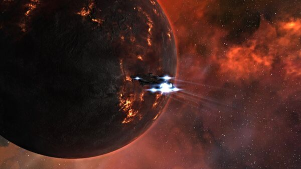

Getting old is not all that it’s cracked up to be. Sure there’s wisdom that comes with age and the desire that if only you could go back in time with what you know now and there’s the added aches and pains as well, but the one that really gets me is not remembering things. Ah, to be young again. Such as it is, I’ve been trying to remember how I discovered this particular capsuleer that held an explorer’s heart. I do remember being surprised by the discovery. Perhaps she made a tweet, or someone told me, but I knew before she made this particular post on her blog.
But I guess I really shouldn’t have been surprised as she’s a great supporter of the community and the person behind and responsible for the Angel Project, an Eve Online charity since 2012, that provides aid to new players. I certainly admire her efforts behind this monumental task of maintaining such a charity. I can’t imagine keeping up with the donations and then being able to weed out those who are trying to scam for assistance from those who are truly new and need help.
Thanks Sindel for all you do for the community and new players of Eve Online. I’m thrilled to include you in the New Eden Explorer’s series. (One day, I’ve got to find that named WH planet… 🙂)
What attracted you to EVE Online and how long have you played?
I started playing Eve Online at the behest of my then-boyfriend-now-husband. When we first started dating, we traded MMOs. I don’t think he ever would have imagined that I’d take to Eve as well as I did. I loved how there were no rules, no boundaries. I loved the freedom. Above all, though, I loved how beautiful the game was. It’s been three years, and I have no intention of quitting.
What is your background as a pilot? Did you jump right into exploration, start in the military, hired by a corporation, or something else?
It was immediately decided that I’d move to null sec. By whom, I have no idea. I trained for 4 and a half months to fly a cloaky Loki, completing the SoE Epic Arc in the meantime, then met my corp in Omist. I’ve been out there ever since, with brief forays into low sec every now and then.
As far as my career path goes, two-thirds of my SP are in Spaceship Command, Navigation and Gunnery. I am very much a trained killer.
What attracted you to explore New Eden? What is your goal and have you achieved it? If not, are you still working towards your goal, do plan to continue, or what are you currently doing?
I’d always been interested in exploring New Eden, but there was just one problem: probing. I didn’t understand it and I got ridiculously frustrated every time I tried. Probing tutorials– both the videos and the written ones– didn’t help me at all. I learn by doing. Luckily, a very nice member of #tweetfleet sat down with me for an hour and walked me through the basics of probing. It only took an hour.
My goal is nowhere near as ambitious as yours! I just like seeing things that not a lot of people bother to look for. I also LOVE screenshots. The only real exploration goal I’ve ever had is finding Eyjafjallajökull, the only named planet in a wormhole. This goal was achieved six weeks after I started looking, with the help of No Holes Barred.
What is the name of your favorite ship that you enjoy flying the most while exploring? Why is it your favorite? Would you mind sharing your fit?
I can usually be found flying a Cheetah when I’m exploring. It has gone through a number of name changes, so right now its name is “Shhhhhhhhhhhhh!”. I also use a Tengu when exploring, but the Cheetah is more practical for someone like me because it’s cheaper to replace and people tend to shoot at me. My current fit is:
[Cheetah, Poke Around]
Sisters Expanded Probe Launcher, Sisters Combat Scanner Probe
Covert Ops Cloaking Device II
150mm Light Autocannon II
Scan Pinpointing Array I
Scan Acquisition Array I
Scan Rangefinding Array I
Limited 1MN Microwarpdrive
Nanofiber Internal Structure II (2)
Damage Control II
Small Ancillary Current Router 1 (2)
Is it a perfect fit? No. But it works for me. I can strike out alone and just explore, or I can assist my fleet when they need a strong prober (and whore on KMs).
During your research and travels, what has been the most interesting fact, amazing sight, or other aspect of New Eden that surprised you?
The thing that constantly surprises me is the attention to detail that CCP gives to even the most little things. The flames at The Bonfire move. The clouds blow across planets. The satellites rotate. The drones have moving parts. When you take the time to actually look– like Ctrl+F9 and LOOK– you see all kinds of intricate details. You fully appreciate the effort behind the game.
What have you learned or what advice would you give to someone interested in exploring New Eden?
The greatest advice I can give is to do your research and make sure you have the right tools for the job. I’d NEVER take the Cheetah into a Sleeper site, that’d be suicide. On the other hand, if I were going to see something like Titanomachy, I wouldn’t bring a Tech III ship; the chance of dying is too high to risk something so valuable, and a Cov Ops ship will work just fine. Adjust your fits and your ships based on what kind of exploration you’re doing.
Also, don’t be afraid to take risks. If you’re scared to lose your ship, or to venture into low/null, you’re missing out on some of the most beautiful things in Eve. Sure, you might die. But, at the end of the day, they’re just pixels, and they are worth risking.
Do you have a favorite image that you wouldn’t mind me posting and sharing from your explorations?
Here is a shot of my trusty Tengu (named Not a Tengu) and the planet Eyjafjallajökull:

Eyjafjallajökull
{kind=link}
{kind=link}
{kind=link}
{kind=link}